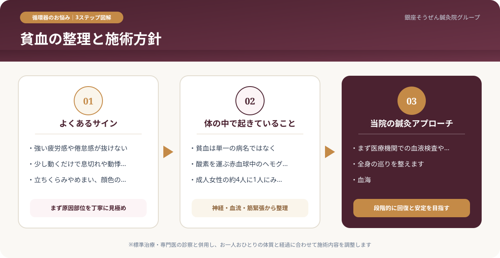

貧血の鍼灸
血液中のヘモグロビンが不足して全身が酸欠状態になる症状です。医療機関での検査と食事改善を基本に、鍼灸で血行と自律神経を整えます。
まず知っておきたい要点と改善の流れ

貧血は単一の病名ではなく、酸素を運ぶ赤血球中のヘモグロビンが減少し全身が酸欠になった状態です。成人女性の約4人に1人にみられる鉄欠乏性貧血が代表的で、月経や消化管からの過度な出血、鉄・ビタミンB12・葉酸などの材料不足、骨髄の造血機能低下、赤血球の破壊などが原因となります。ピロリ菌感染や運動時の足底衝撃による溶血が関わる場合もあります。
このようなお悩みはありませんか？
- ✓強い疲労感や倦怠感が抜けない
- ✓少し動くだけで息切れや動悸がする
- ✓立ちくらみやめまい、顔色の悪さが気になる
- ✓手足の冷えやしびれ、爪の変形・抜け毛がある
当院の施術アプローチ・改善の流れ
なぜ鍼灸で改善へ向かうのか？（作用機序の図解）
貧血に対する鍼灸は、心拍変動・血管トーンを整える自律神経サポート機序を通じて、お体本来の回復力を引き出します。

循環器専門医の標準治療を絶対前提とし、手首や背部の安全な経穴へ低刺激でアプローチします。
心臓への過剰な交感神経刺激を穏やかに鎮め、心拍リズムと血管緊張の急変を抑えます。
ストレスで固まりやすい胸郭や横隔膜の緊張を解き、酸素摂取とリラックス反応を促します。
内服管理を厳守しながら、疲労やストレスが引き金となる症状不安の軽減を支えます。
院長YouTube解説・関連動画
貧血とは病気ではなく状態のこと
鉄は体の中でいろいろな役割を果たしています。鉄が足りなくなると、血液の成分の１つである赤血球細胞内の重要なタンパク質であるヘモグロビンが減ってしまいます。
ヘモグロビンが減ってしまうと、十分な量の酸素の運搬ができなくなってしまいます。ヘモグロビンが減り、酸素の運搬が不十分になってしまった状態が鉄欠乏性貧血です。貧血は病気の名前ではなく、状態のことを指すのです。
鉄欠乏性貧血は日本には非常に多いです。特に多いのは成人女性で、約25%が発症しているといわれています。
鉄不足の原因は、偏った食事や胃腸切除などで起こる吸収の低下、月経などの性器出血や消化管出血による排泄の増加、成長期や妊娠や授乳での鉄の必要量の増加などが考えられます。
貧血は、血液の赤血球に含まれるヘモグロビンの減少が原因で酸素が運ばれなくなり体の中が酸欠の状態になることです。
ヘモグロビンの主な成分は赤血球の赤い色素の部分です。ヘモグロビンは鉄を含むヘムとたんぱく質のグロビンが合わさった物質のことで、肺で酸素を取り込み、酸素を全身に運ぶという働きをしています。
体の中が鉄分不足になると、ヘモグロビンの量が減ります。すると、全身に運べる酸素の量も減ってしまうのです。全身の酸素の量が減ることによって、各組織や臓器が酸欠の状態になって貧血の症状が出てきます。
立った状態が長く続くとフラフラしたりなかなか元気が出ないとき、実は貧血だったということも多いです。当院でも、コロナ後遺症の人や起立性調節障害の人が多く来院されますが、もともと貧血で悩んでいる人も非常に多いです。
一般的な考え方だと貧血は鉄を飲んでゆっくりしていれば改善すると思っている人が多いが、最近驚くべきことがわかりました。貧血は急に症状が出たり急に改善したり体の生理反応で起こります。
出血しているわけでもなく鉄を飲んでも改善しない人が結構います。血液中の赤血球や中に含まれるヘモグロビンの量が正常より少ない状態を指します。
ヘモグロビンは酸素を肺から全身に送る役割を持つため、貧血になると全身の臓器や内臓に十分に酸素が行き渡らないことによっていろいろな症状が起こります。
貧血の原因は大きく分けて４つ
貧血の原因は、大きく分けて４つあります。１つ目は過度の出血、２つ目は赤血球の材料の不足、３つ目は血を作る機能の低下を引き起こす病気、４つ目は赤血球を破壊する病気です。
１つ目の過度な出血を起こしてしまう原因は、月経や出産、外傷、消化器がん、潰瘍などです。
２つ目の赤血球の材料の不足が原因の貧血は若い年代の人に多いです。中でもヘモグロビンの材料となる鉄不足で起きる貧血は鉄欠乏性貧血と呼ばれ、若い女性に多いです。
どのくらい多いのかというと、若い女性の中でも4人に１人が鉄欠乏性貧血を経験しているといわれているほどです。
特に、妊娠している場合や授乳中の場合、鉄不足になりやすいため注意が必要です。妊娠すると、体の中の鉄分が優先的に胎児の発育や胎盤の機能の維持に使われます。そのため、妊娠中は貧血を起こしやすいのです。
授乳期には赤ちゃんが必要な鉄分を母乳から補給するため、母体から鉄分が不足します。よって授乳期も貧血を起こしやすいのです。
貧血の原因は栄養不足、慢性的な出血、吸収障害、遺伝性の要因、慢性疾患、ビタミンB１２葉酸の摂取不足、消化管の出血、胃潰瘍、大腸ポリープ、月経過多、セリアック病、胃の主蔵におこる状態です。
遺伝性の原因は鎌状赤血球症、サラセラミア、慢性疾患の原因は腎不全、リウマチ疾患、がんです。
●鉄欠乏性貧血・・・一般的な貧血で体内の鉄が不足することによって起こります。鉄はヘモグロビンの構成要素の１つで鉄が不足するとヘモグロビンが作られなくなります。
原因は、鉄分の摂取不足、月経方、消化管から腸、大腸の慢性的な出血、妊娠中の鉄需要の増加です。鉄欠乏性貧血になるとスプーンネイルといい爪が凹んだりすることもあります。
●巨赤芽球性貧血・・・ビタミンB２、葉酸の不足によって赤血球が正常に成熟できず、巨赤芽球という大きな赤血球ができることによって起こります。胃腸の吸収障害、偏食、高齢者、アルコール依存症の人に多いです。
●溶血性貧血・・・体内で赤血球が通常よりも早く破棄されることによって起こる貧血です。遺伝性の病気や鎌状赤血球症、サラセラミア、免疫系の異常、薬物反応、感染症などが原因になります。
●慢性疾患性貧血・・慢性腎臓病や癌、リウマチ性疾患によって体内で鉄が正常に利用されないことで起こります。体内の鉄の移動がうまくできず、赤血球の生成が抑制されてしまいます。
初めは貧血の症状がないこともある
貧血で初めに起こる主な症状は、疲労感、倦怠感、息切れ、動悸、顔面の血行不良、皮膚の蒼白、めまいや立ちくらみ、手足の冷えなどです。
貧血が進んでいくと、頭痛や目まい、気が遠くなる、運動中の筋肉のけいれんや胸の痛みなどの症状があることが多いです。
貧血であったとしても、初めのうちはほとんど自覚症状がないことも多いです。他にも、運動している時にのみ症状が出たり、医師の言葉を聞いたりしてそこで自分が貧血であることを知ることもあります。
鉄欠乏性貧血では、爪が割れやすかったり、唇や舌に炎症が起きたり、髪が抜けたり、肌が荒れたりするなどの症状が起きることが多いです。
巨赤芽球性貧血は、手足が痺れたり、チクチクした痛みがあったりします。さらに巨赤芽球性貧血が進むと、抑うつ症状や記憶障害などの神経症状があることもあります。
高齢者に関しては、貧血によって物忘れがあり、認知症と勘違いしてしまうというケースも見られます。そのため、見極める力と注意力が必要となります。
酸欠状態になると脳に非常に大きな影響を与えます。酸欠状態になった時に起こる脳への影響で代表的な症状は、 めまいや頭痛です。
脳だけでなく、筋肉も酸欠状態になることがあります。筋肉が酸欠状態になると、体の全身がだるい、疲れがなかなか取れない、などの症状があります。貧血を起こすと皮膚を赤くしている色素の減少が原因で赤みが消え黄色いくすんだ肌になります。
貧血による影響は脳だけでなく、目の結膜や爪にも現れます。目の結膜は赤みが消え白く見え、爪も白く見えるようになります。
重度の貧血が続いた場合、爪には大きな影響が現れます。スプーンのように反り返ったり、弱くなって割れたり、表面がはがれたり、みぞができ表面がでこぼこになるなどです。
体に起こる変化をきちんと見てチェックすることが大事です。体のサインを見逃さないように注意しましょう。
・疲労感と倦怠感
貧血の最も一般的な症状で、持続的な疲労感やだるさを感じることがあります。通常の活動をするのに必要なエネルギーが不足し、体全体が重く感じることが多いです。
・息切れ（呼吸困難）
軽い運動や階段を上るだけでも息切れを感じたり、呼吸が苦しくなることがあります。ひどい場合には、安静時にも息切れを感じることがあります。
・めまいとふらつき
立ち上がったときにめまいやふらつきを感じることがあります。場合によっては、失神することもあります。
・動悸（心拍数の増加）
心臓の鼓動が速く、強く感じることがあります。胸のあたりでドキドキするような感覚が強くなることが特徴です。
・顔色の悪化（蒼白）
皮膚や粘膜（特に口の内側や結膜）の色が青白くなることがあります。顔色が悪い、くすんで見えるといった変化が特徴的です。
特に前頭部に重たい頭痛を感じることが多いです。貧血が進行すると、頭痛の頻度や強さが増すことがあります。
・ 集中力の低下と記憶力の低下
日常の業務や勉強に集中できなくなったり、記憶力が低下することがあります。簡単なことを忘れるようになることもあります。
・冷え性と四肢のしびれ
手足の冷えやしびれを感じることがあります。特に指先や足先が冷たく、感覚が鈍くなることがあります。
・爪や髪の変化
爪が割れやすくなったり、薄くなることがあります。また、髪が抜けやすくなったり、ツヤがなくなり、細く弱くなることがあります。
・食欲不振と体重減少
食欲が低下し、食事を取る意欲が減退することがあります。長期間続くと、体重が減少することもあります。
特に運動時や急激に体を動かしたときに、胸の痛みを感じることがあります。
・異食症（ピカ症）
非食物（氷、土、紙、チョークなど）を食べたいという異常な欲求が生じることがあります。
・口内炎や舌の痛み
口内炎や舌の腫れ、痛みが発生することがあります。また、舌が平滑になり、赤くなることもあります。
貧血の主な改善方法は鉄サプリの摂取、鉄分の多い食品、赤身肉、緑黄色野菜、豆類、ビタミンB２葉酸の摂取です。
薬物療法は、免疫抑制剤、赤血球生成刺激薬、ホルモン薬、鉄注射です。原因疾患がある人は胃潰瘍、大腸がん、大腸ポリープなどを改善する必要があり、それでもなかなか難しい人は赤血球の輸血をします。
毎日の食事の改善も大事です。規則正しくバランスのよい食生活をするように気をつけることが必要です。バランスの良い食生活の中でも、鉄分の摂取に気をつけることが大事です。症状によっては、鉄剤などの貧血改善薬を使うこともあります。
食べ物のに含まれる鉄分は肉や魚類などに多く含まれるヘム鉄と、野菜や海藻、貝類などに多い非ヘム鉄の２種類に分類されます。
非ヘム鉄はヘム鉄に比べ吸収率が低いため、動物性食品と一緒にバランスよく食事でとることが大事です。ビタミンＣ、カルシウムと一緒にとると、さらに鉄の吸収率を高めることができます。
●ヘム鉄を含む食品（動物性食品）
・赤身の肉（牛肉、豚肉、鶏肉）
牛の赤身肉やレバーは特に鉄分が豊富です。これらの肉には、体内で吸収されやすいヘム鉄が多く含まれており、貧血改善に効果的です。
・レバー（鶏レバー、豚レバー）
レバーは、鉄分を非常に多く含む食品で、ビタミンA、ビタミンB12、葉酸なども豊富に含まれています。ただし、ビタミンAの過剰摂取に注意が必要です。
・魚介類（カキ、マグロ、イワシ、サバ）
カキやサバ、イワシなどの青魚、マグロの赤身部分もヘム鉄が豊富で、鉄分補給に役立ちます。また、これらの魚はDHAやEPAなどの健康的な脂肪酸も含んでいます。
●ビタミンB12を多く含む
・食品ほうれん草や小松菜
ほうれん草、小松菜、ケールなどの緑黄色野菜は、非ヘム鉄を豊富に含んでいます。これらの鉄分の吸収を助けるために、ビタミンCを多く含む食品と一緒に食べることが効果的です。
・豆類（レンズ豆、ひよこ豆、大豆製品）
豆類（レンズ豆、ひよこ豆、黒豆など）は、鉄分とともにたんぱく質や食物繊維も豊富に含んでおり、貧血改善に役立ちます。豆腐や納豆、味噌などの大豆製品も同様です。
・ナッツ類（アーモンド、カシューナッツ）
ナッツ類には鉄分が含まれ、特にアーモンドやカシューナッツは鉄分の補給源として有効です。これらはスナックとしても摂取しやすい食品です。
●ビタミンB12を多く含む食品
・魚介類（サケ、サバ、ニシン）
サケやサバ、ニシンには、ビタミンB12が豊富に含まれています。ビタミンB12は赤血球の生成に不可欠で、特に動物性食品に多く含まれています。
・乳製品（牛乳、チーズ、ヨーグルト）
牛乳やチーズ、ヨーグルトにはビタミンB12が含まれており、特に菜食主義者にとって重要なビタミンB12の供給源です。
卵黄はビタミンB12を含む食品です。定期的に卵を摂取することで、ビタミンB12の補給が期待できます。
●葉酸を多く含む食品
・緑黄色野菜（ブロッコリー、アスパラガス、ほうれん草）
ブロッコリーやアスパラガス、ほうれん草には葉酸が豊富に含まれており、赤血球の形成を助ける役割を果たします。
・果物（オレンジ、イチゴ、バナナ）
果物にも葉酸が含まれています。特にオレンジやイチゴなどのビタミンCを含む果物は、葉酸の吸収を助けます。
・豆類（レンズ豆、黒豆）
レンズ豆や黒豆には葉酸が多く含まれています。これらの豆類を日常的に取り入れることで、葉酸の摂取量を増やすことができます。
●ビタミンCを多く含む食品
・柑橘類（オレンジ、レモン、グレープフルーツ）
ビタミンCは、非ヘム鉄の吸収を助ける役割があります。オレンジやレモン、グレープフルーツなどの柑橘類を食事に取り入れると、鉄分の吸収が促進されます。
・野菜（パプリカ、ブロッコリー、キャベツ）
パプリカ、ブロッコリー、キャベツなどの野菜もビタミンCを多く含んでおり、鉄分の吸収を高める助けとなります。
・キウイフルーツ、イチゴ、パパイヤ
キウイフルーツ、イチゴ、パパイヤなどもビタミンCの供給源であり、鉄分の吸収を助ける効果があります。
●その他の栄養素を含む食品
・全粒穀物（玄米、オートミール、全粒パン）
全粒穀物は、鉄分、ビタミンB群、食物繊維が豊富に含まれており、貧血の予防に効果的です。白米や白いパンの代わりに、玄米や全粒パンを選ぶとよいでしょう。
・海藻類（ヒジキ、わかめ、昆布）
海藻類には鉄分が多く含まれており、特にヒジキは豊富な鉄分の供給源として知られています。
毎日の食生活を気をつけることによって血液中の鉄不足は改善されたとしても、貯蔵鉄が不足した状態はその後も続くことがあります。
鉄剤などの貧血改善薬は２～３カ月は続けてください。さらに、毎日鉄を摂取することを意識し、バランスのよい食生活を続けてください。
胃の弱い人の中には、貧血改善薬をのむと胃腸障害を起こす人もいます。そのような人は、胃ではなく小腸で溶ける腸溶性タイプが胃に負担がかからないため安心です。
一般の人は知らない貧血
・ヘリコバクタ―ピロリ菌による貧血
胃の中に生息するピロリ菌により血欠乏性貧血が発症することがあります。ピロリ菌の感染が鉄吸収を邪魔することで起こります。
・フットストライクへモリス
ランニングなどの高負荷によって足の裏で赤血球が潰れることで起こります。マラソンランナーや長距離速ランナーの人によく見られる貧血です。
・サイレント貧血
症状が非常に軽微で一般的な方法では発見されません。疲労感や集中力の低下不快感など曖昧な症状で自覚しないまま進行します。
・非典型的型鉄欠乏性貧血
鉄の欠乏が明確に確認されず鉄補充療法によって反応します。密かな出血、吸収障害によって起こります。
貧血の予防としてまず初めに、バランスの取れた食生活を心がけることが重要です。特にタンパク質と鉄分、ビタミンB12、葉酸は赤血球やヘモグロビンの材料になります。
肉や魚介、大豆、乳製品、ビタミンやミネラルを多く含む海藻や野菜は毎日食べるようにしてください。妊娠している時や授乳中は、鉄分や葉酸が不足してしまうことが多いです。そのため、特に注意して食事に気をつけてください。
鉄血性貧血は、鉄分の吸収に関して問題があることが多いです。なるべくコーヒーを食後に飲むことを避けたり、ビタミンCの豊富な果物類を進んで摂ると良いです。
貧血を発症してしまった時は、食生活だけで改善することは難しいです。薬による改善と合わせて行ってください。
鉄剤などの貧血の薬と一緒に摂取してはいけない食べ物や飲み物もあります。医療機関に相談してアドバイスをもらうと良いです。胃の摘出手術を受けた人は数年後に巨赤芽球性貧血を起こすこともあります。そのような人も注意が必要です。
鉄の１日の推奨摂取量は、男性は7.5mg、女性は年齢や状況によって異なりますが、月経がある場合11mg、閉経後は6.5mgだと言われています。貧血は男性よりも女性に多く見られます。
それは、女性には月経があるため、月経によって血液や鉄分を失うことや食物の嗜好の違いなどが原因だと言われています。また、貧血は高齢になると増加するとも言われています。
メニエール病・難治性めまい・耳鳴りのツボ図解
実際の施術ではお一人おひとりの体質・症状に合わせて選穴しますが、メニエール病・前庭性片頭痛・耳鳴り・難治性めまいの内耳循環ケアの臨床でよく用いられる代表的なツボの目安です。

📌 代表的なツボの詳細一覧表を開く（6穴） ▼
| ツボ名 | 位置の目安 | 主な狙い | セルフケアの注意点 |
|---|---|---|---|
| 聴宮（ちょうきゅう） | 耳の穴の前、口を開けるとくぼむ場所 | 内耳周囲の微小循環改善・耳閉感や耳鳴りケア | 強く押さず口を少し開けて優しく触れます。 |
| 翳風（えいふう） | 耳たぶのすぐ後ろのくぼみ | 内耳・三叉神経・顔面周囲の血流とリンパ循環促進 | めまい発作直後は首を動かさず静かに温めます。 |
| 風池（ふうち） | 後頭部の生え際のくぼみ | 後頭下筋群の緊張緩和・椎骨動脈血流サポート | 親指で上向きに優しく支えるように押します。 |
| 完骨（かんこつ） | 耳の後ろの出っ張った骨の下後ろ | 平衡感覚の安定・睡眠の質改善 | 左右の張りを比べながら優しく緩めます。 |
| 内関（ないかん） | 手首の横ジワから指3本分肘寄りの中央 | めまいに伴う吐き気・自律神経発作の鎮静 | めまいが出そうなときのセルフ指圧にも有効です。 |
| 太衝（たいしょう） | 足の甲、親指と人差し指の骨の間 | ストレス性の内リンパ水腫悪化・イライラの緩和 | 深呼吸と合わせて3〜5秒ずつ押します。 |
国際査読論文の科学的エビデンス
国際的な医学データベース（PubMed・Cochrane等）で報告されているメニエール病・前庭性片頭痛・耳鳴り・難治性めまいの内耳循環ケア領域の代表的な査読済み鍼灸研究をまとめています（標準治療との併用や研究上の限界を含めて正確に掲載）。
📚 査読論文データ・PubMed出典リンクを開く（4件） ▼
| 年・研究デザイン | 対象・規模 | 主な結果 | 限界・出典 |
|---|---|---|---|
| 2019年 大規模多施設RCT | 慢性安定狭心症 398名解析（標準薬物療法併用） | 16週時点の4週間発作減少は実鍼群がシャム群比5.18回・待機群比5.63回多く有意改善（P<0.001）。 | 標準薬物療法への併用（補完）試験であり単独療法ではない。 JAMA Intern Med (PMID: 31355870) |
| 2007年 シャム対照RCT | 本態性高血圧 140名完了（ドイツ・24時間ABPM） | 治療終了時の24時間血圧はシャム比SBP -6.4mmHg・DBP -3.7mmHg有意低下（P<0.001）。 | 終了3〜6か月で治療前水準へ戻るため継続ケアが必要。 Circulation (PMID: 17548730) |
| 2015年 メタ解析 | 高血圧 23 RCTs（n=1,788） | 降圧薬＋実鍼は降圧薬＋シャム比でSBP -7.47mmHg・DBP -4.22mmHg有意低下。鍼単独は降圧薬と同等・根拠不十分。 | 盲検化・異質性に課題。降圧薬の自己中断は厳禁。 PLoS One (PMID: 26207806) |
| 2025年 メタ解析 | 心拍変動（HRV）10 RCTs（n=744） | 自律神経全体の適応指標SDNNを有意に改善、重篤な有害事象なし。 | LF・HFには不確実性が高くさらなる検証が必要。 Front Neurosci (PMID: 41230507) |
参考文献・出典
- 2019年 大規模多施設RCT（慢性安定狭心症 398名解析（標準薬物療法併用））— JAMA Intern Med (PMID: 31355870)
- 2007年 シャム対照RCT（本態性高血圧 140名完了（ドイツ・24時間ABPM））— Circulation (PMID: 17548730)
- 2015年 メタ解析（高血圧 23 RCTs（n=1,788））— PLoS One (PMID: 26207806)
- 2025年 メタ解析（心拍変動（HRV）10 RCTs（n=744））— Front Neurosci (PMID: 41230507)
よくある質問（FAQ）
Q. 貧血のセルフケアでおすすめのツボはありますか？▼
Q. 病院の鉄剤と鍼灸は併用できますか？▼
あわせて読まれる関連疾患（循環器のお悩み）
水分の過剰摂取で血液のナトリウム濃度が急低下する危険な状態です。急性期は救急対応が最優先で、安定期のストレス管理を支援します。
心臓の拍動を指令する洞結節の働きが低下し徐脈や動悸を起こす病気です。専門医管理を最優先に、安定期の体調を整えます。
末梢血管の収縮により気温に関係なく手足や腰が冷える状態です。当院では閉じた血管をこじ開ける鍼灸と正しい温めケアで根本改善を目指します。
ヘモグロビン値は正常でも貯蔵鉄（フェリチン）が枯渇した隠れ貧血です。食事・検査とあわせ、鍼灸で消化吸収力と自律神経を整えます。
DNA修復障害により汎血球減少や先天異常をきたす指定難病です。専門医の継続治療を最優先とし、安定期・主治医許可下で補完ケアを行います。
首の骨の中を通る椎骨動脈の内膜が裂ける重篤な血管疾患です。突然の頭痛は即救急受診が必須で、首への施術や操作は絶対禁忌です。
CLINICAL RECOVERY CASES
✨ 実際の臨床改善事例・回復経過を見る
銀座本院をはじめ各院での実際の改善事例を症状別に絞り込んでご確認いただけます。
おひとりで悩まず、まずはご相談ください
銀座本院・川口・大宮・横浜・博多・田無の各院でご予約を承っております。